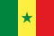
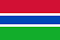
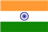

О Бордовой кнопке
Погодите, разве это не Красная кнопка? Откуда здесь флаги?
Экран циклически перебирает пять разных флагов. Один из этих флагов, A, относится к другому континенту, в отличие от остальных. Упорядочьте остальные четыре флага по их широтам в таблице ниже, в зависимости направления, в котором экран перебирает флаги. Если экран перебирает флаги слева направо, упорядочьте их с севера на юг. Если экран перебирает флаги справа налево, упорядочьте их с юга на север. Нажмите на кнопку, когда флаги выделены на экране в полученном порядке. Нажмите на кнопку, когда на экране выделен флаг A в последнюю очередь, вне зависимости от его широты. Но если последняя цифра серийного номера чётная, нажмите на кнопку, когда на экране выделен флаг A в первую очередь.
| Флаг | Страна | Континент | Широта |
|---|---|---|---|
 | Алжир | Африка | 28.0339° сев.ш. |
 | Сенегал | Африка | 14.4974° сев.ш. |
 | Гамбия | Африка | 13.4432° сев.ш. |
 | Ангола | Африка | 11.2027° юж.ш. |
 | Япония | Азия | 36.2048° сев.ш. |
| Южная Корея | Азия | 35.9078° сев.ш. | |
 | Китай | Азия | 35.8617° сев.ш. |
 | Индия | Азия | 20.5937° сев.ш. |